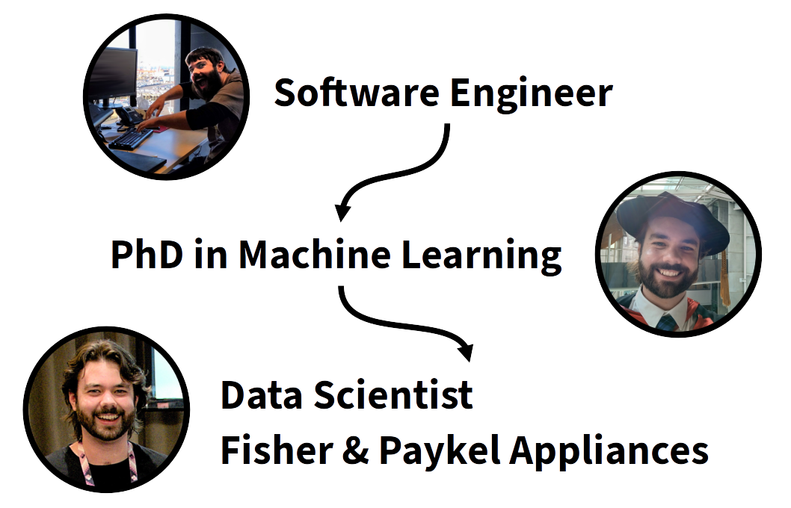

### Welcome! Get ready for the Exploratory Data Analysis workshop: <div style="font-size: 0.78em;"> 1. Open the workshop materials: **[ben-denham.github.io/python-eda](https://ben-denham.github.io/python-eda)** 2. Click the link to open **Google Colab Notebooks** 3. Click the **`New Notebook`** button 4. Type **`1+1`** into the empty prompt/cell, then **press the `Enter` key *while holding* the `Shift` key** to run it 5. After a short delay while the notebook starts, you should see the result: `2` 6. If you need help, **ask a neighbour or a helper** </div>
# Exploratory Data Analysis with Python ### Dr Ben Denham
## My Path to Data Science <div>  </div> <aside class="notes"> * My roots lie in software engineering * I started seriously using these tools and techniques while completing a PhD in machine learning * And I now regularly explore data as a data scientist at Fisher & Paykel Appliances </aside>
### Workshop Structure <style> tr.highlight-row { background: #DDDDDD; font-weight: bold; } </style> <table> <tr> <td>Introduction</td> <td>2:00 - 2:15</td> </tr> <tr class="highlight-row"> <td>Tutorial 1: Loading and Visualising</td> <td>2:15 - 3:00</td> </tr> <tr> <td>Afternoon Tea</td> <td>3:00 - 3:20</td> </tr> <tr class="highlight-row"> <td>Tutorial 2: Transforming and Filtering</td> <td>3:20 - 4:20</td> </tr> <tr class="highlight-row"> <td>Presentation: Effective Data Analysis</td> <td>4:20 - 4:35</td> </tr> <tr> <td>Short break</td> <td>4:35 - 4:45</td> </tr> <tr class="highlight-row"> <td>Tutorial 3: Grouping and Presenting</td> <td>4:45 - 5:45</td> </tr> <tr> <td>Wrap-Up</td> <td>5:45 - 6:00</td> </tr> </table> <aside class="notes"> * Timings are just a guide </aside>
## Hands-On Tutorials <div style="display: flex;"> * **Follow-along coding** * **Tutorial 1:** Typing everything * **Tutorials 2 and 3:** Less typing, more complex examples * **Practice exercises** * Try it yourself, then together * Plus "extra for experts" </div> <aside class="notes"> * As we progress through tutorials, examples will get more complex, so there will be less typing </aside>
## Getting Help! <div style="display: flex;"> * <strong>If you get stuck at any point</strong> * Raise your hand! A helper will come to you. * If you finish quickly - help your neighbours. <img src="images/hand-up.webp" style="width: 40%; object-fit: contain;"> </div> <aside class="notes"> * Practice raising hands * Introduce yourself to your neighbours * Name * Beginner/Intermediate/Expert @ Python </aside>
### What is Exploratory Data Analysis? <div style="display: flex;"> * Getting to know the data * Asking questions, following leads * Testing our assumptions * Summaries, plots, relationships * Precursor to modelling (statistical inference, machine learning) <img src="images/detective.webp" style="width: 30%; object-fit: contain;"> </div> We're going to **learn EDA by doing it!**
## The Data: <div style="font-size: 0.95em; display: flex;"> * **New Zealand Airbnb listings from [insideairbnb.com](https://insideairbnb.com)** * [CC BY 4.0 License](http://creativecommons.org/licenses/by/4.0/) * We'll explore a sample of listings from September 2023 * **Our (Broad) Goal:** Pricing a listing based on its details </div> <aside class="notes"> * When performing exploratory data analysis, it is very helpful to have a goal in mind * Inside Airbnb collect this data to analyse the impact of short-term Airbnb rentals on residential housing areas * Our eventual goal is to determine a reasonable price for an Airbnb listing, so we'll be interested in exploring relationships between the listing details of an Airbnb and its price. * We might make a few detours along the way though :) </aside>
## Why for EDA? <div style="font-size: 0.9em;"> * **Many libraries** for data analysis with a **global community** * As a **general purpose language**, Python has natural paths for developing your analysis into: * A **web application or API** * An automated **data processing pipeline** * A **machine learning model** </div>
## Our Tools for Today <div style="text-align: center;"> <img src="images/jupyter-logo.svg" style="width: 30%;"> <br> <img src="images/pandas-logo.svg" style="width: 30%;"> <br> <aside class="notes"> * These are not the only options in the Python ecosystem * And Pandas often provides many different approaches for a single task * This will be an opinionated guide of how to quickly get started using these tools </aside> </div>
# Questions?
# How to Productively Explore Data ### Inspired by: [R for Data Science - Exploratory Data Analysis](https://r4ds.hadley.nz/eda)
#### There is no one process that fits all datasets! #### The ideas here may help you structure your process <aside class="notes"> </aside>
## Gotta iterate fast! <div style="display: flex; font-size: 0.8em;"> 1. <!-- .element class="fragment" --><strong>Ask questions</strong> * Brainstorm lots of them * Having a goal helps 2. <!-- .element class="fragment" --><strong>Get answers</strong> * The faster the better * Familiarity with your tools helps 3. <!-- .element class="fragment" --><strong>Document your findings</strong> * For others, but especially for future you! 4. <!-- .element class="fragment" --><strong>From what you learn, ask more questions</strong> 5. <!-- .element class="fragment" --><strong>Clean your code!</strong> * Lay a solid foundation for the next iteration * Rename variables, write functions, add comments </div>
### It's basically the scientific method! <p style="font-size: 0.5em;">By Efbrazil, CC BY-SA 4.0, <a href="https://commons.wikimedia.org/w/index.php?curid=102392470">https://commons.wikimedia.org/w/index.php?curid=102392470</a></p>
<img src="images/adam-science.gif" width="100%">
## But what kinds of questions? <div style="font-size: 1em;"> 1. <!-- .element class="fragment" -->What <strong><em>variation</em></strong> can I see within this column? * Use summary statistics, plots of distribution 2. <!-- .element class="fragment" -->What <strong><em>covariation</em></strong> can I see between these columns? * Start with pairs of columns - e.g. scatter plots * The first step to **predicting one column from another** or **establishing a causal relationship** </div>
## Variation within one column: Histograms / Bars <div style="display: flex; margin-top: 0.8em;"> <div> <h4 style="margin: 0;">Continuous Values</h4> <div style="font-size: 0.7em;">(numbers with decimal points)</div> </div> <div> <h4 style="margin: 0;">Categorical Values</h4> <div style="font-size: 0.7em;">(string labels or small sets of integers)</div> </div> </div> **Tip:** Try several bin widths for continuous columns!
## Distribution follow-up questions * <!-- .element class="fragment" --><strong>Which values are common or rare? Why?</strong> * E.g. If most ratings are above 4.0, 4.1 is pretty bad * E.g. Are outlier prices correct? Are they relevant? * <!-- .element class="fragment" --><strong>Any unusual patterns? What might explain them?</strong> * E.g. Spikes at whole-numbered ratings * <!-- .element class="fragment" --><strong>Any apparent subgroups/clusters of points?</strong> * How are clusters similar and how do they differ?
### Covariation: Continuous vs Continuous <div style="display: flex; margin-top: 0.8em;"> <div> <h4 style="margin: 0;">Scatter Plots</h4> </div> <div> <h4 style="margin: 0;">Heat Maps</h4> </div> </div> **Tip:** Make overlapping scatter points more visible with transparency or random jitter to point positions
### Covariation: Continuous vs Categorical <div style="display: flex; margin-top: 0.8em;"> <div style="width: 37%;"> <h4 style="margin: 0;">Hist with color</h4> </div> <div style="width: 25%;"> <h4 style="margin: 0;">Subplots</h4> </div> <div style="width: 37%;"> <h4 style="margin: 0;">Box Plot</h4> </div> </div> (we'll see similar examples in the next tutorial)
### Covariation: Categorical vs Categorical <div> <h4 style="margin: 0;">Stacked Bar Chart</h4> </div> <div> <h4 style="margin: 0;">Heat Map</h4> </div>
## Follow-up questions from covariation plots * **How can you describe the relationship?** * **How strong is the relationship?** * **What other variables might affect it?** * **Does the relationship change for subgroups?**
## Common gotchas <div style="font-size: 0.9em;"> * <!-- .element class="fragment" --><strong>Pay attention to missing values</strong> * `NaN`s are omitted from plots, but may be important * <!-- .element class="fragment" --><strong>Check data quality</strong> * Test even your most basic assumptions * <!-- .element class="fragment" --><strong>Be cautious testing hypotheses suggested by the data</strong> * If 1/100 columns is correlated, is it a coincidence? * <!-- .element class="fragment" --><strong>Always be skeptical</strong> * Is this pattern or apparent clustering a coincidence? An artifact of the data collection process? </div>
# Questions?
### Enough talking, let's get back to doing!
## What have we learned? 1. <!-- .element class="fragment" --><strong>Getting your data into Python</strong> * Load and view data in Pandas 2. <!-- .element class="fragment" --><strong>Cleaning and preparing data</strong> * Transforming and filtering 3. <!-- .element class="fragment" --><strong>Visualising relationships between attributes</strong> * Plotting, grouping, and aggregating 4. <!-- .element class="fragment" --><strong>Sharing your results</strong> * Exporting CSVs and HTML notebooks
## Where to Next? <div style="font-size: 0.85em;"> * **Review the tutorials and complete the exercises** * **Learn more Python** * Install [JupyterLab](https://jupyter.org/install) on your own machine * Read the docs for [Pandas](https://pandas.pydata.org/docs/) and [Plotly](https://plotly.com/python/) * Learn [Panel](https://panel.holoviz.org/) for dashboarding and interactivity * Come along to a [PyNoon](https://pynoon.github.io/) or meetup * **Learn more statistics** * [Think Stats](https://greenteapress.com/thinkstats/) and [Think Bayes](https://greenteapress.com/wp/think-bayes/) * **Learn machine learning and AI in Python** * [scikit-learn](https://scikit-learn.org/stable/) and [huggingface](https://huggingface.co/) * Andrew Ng's [Machine Learning](https://www.coursera.org/specializations/machine-learning-introduction) and [deeplearning.ai](https://www.deeplearning.ai/courses/) courses </div> <aside class="notes"> * There's lots of great learning material out there, but these are the resources I'm familiar with * PyNoon is an initiative started by myself and Grant Paton-Simpson </aside>
### Most importantly: Practice your skills! 1. **Find a dataset you're passionate about** * [kaggle.com](https://www.kaggle.com/) * [data.govt.nz](https://www.data.govt.nz/) 2. **Brainstorm interesting questions** * Feel free to change direction as you learn more about the data 3. **Share your findings!** * Email your HTML notebook to others * Publish your notebooks on Kaggle, Github, GitLab
## Special thanks * All of today's helpers! * Sources: * [Software Carpentry - Plotting and Programming in Python](https://swcarpentry.github.io/python-novice-gapminder) ([CC-BY 4.0](https://swcarpentry.github.io/python-novice-gapminder/LICENSE.html)) * [R for Data Science - Exploratory Data Analysis](https://r4ds.hadley.nz/eda) * [PyNoon Lessons](https://pynoon.github.io/lessons/)
## Thank you for coding along! Find notes and completed notebooks at:<br>[ben-denham.github.io/python-eda/speaker](https://ben-denham.github.io/python-eda/speaker) Any follow-up questions?<br>Come say hi or email me at ben@denham.nz